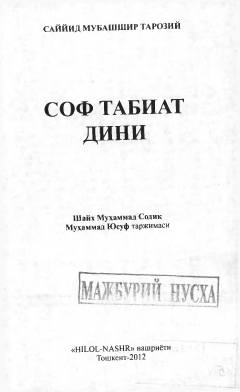

STIslom dinining inson tabiatiga mosligi va uning abadiy haqiqat ekanligi haqidagi asar.
Ushbu asar islom dinining inson tabiatiga mosligi va uning abadiy haqiqat ekanligini ilmiy hamda mantiqiy dalillar bilan tushuntirib beradi. Muallif insoniyatni, xususan G'arb olamini moddiy dunyoqarashlardan voz kechib, Islomning ma'naviy va axloqiy qadriyatlariga qaytishga da'vat etadi.